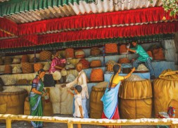
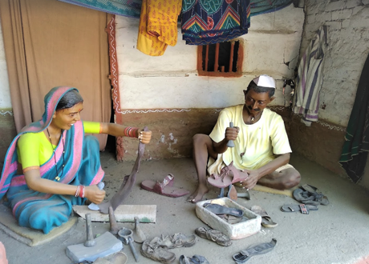

About : This museum showcases different aspects of Gramjivan (village life). Gram means village and jivan means life in the Marathi language. This initiative was the dream of Mahatma Gandhi, and was created through the vision and efforts of Siddhagiri Gurukul Foundation. The history of self-sufficient village life in Maharshtra, before the invasion of the Mughals, is depicted in the form of cement sculptures. Each sculpture is lifelike and represents activities performed in daily village life. There were 12 Balutedars (essentially artisan castes), and 18 Alutedars who provided equipment to carry out domestic and professional tasks.The museum is spread over 7 acres (28,000 m2), and the surrounding countryside is beautiful, with lush greenery. Every aspect of village life has been depicted in almost 80 scenes that showcase more than 300 statues.
Timing : 9am–6pm

